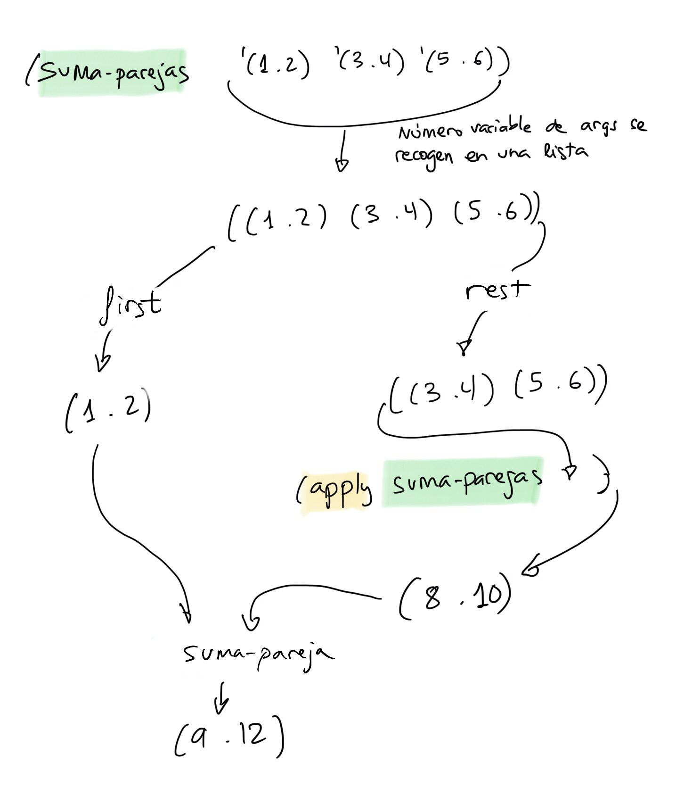

Notas de clase de la semana 3 de LPP.
lambdaVamos a ver cómo se implementan de forma recursiva:
mi- en todas ellas):mi-list-refmi-appendmi-reverselista-desdefiltra-paresprimo?¿Cómo diseñamos una definición recursiva de una función?
mi-list-refLa función (mi-list-ref n lista) devuelve el elemento n de una
lista (empezando a contar por 0). Un ejemplo concreto:
(mi-list-ref '(a b c d e f g) 4) ; ⇒ e
¿Podemos formular (mi-list-ref '(a b c d e f g) 4) de forma
recursiva?:
Formulación recursiva de mi-list-ref:
Para devolver el elemento 2 de la lista (a b c d e f g):
Hacemos el cdr de la lista (obtenemos (b c d e f g))
y devolvemos su elemento 1. Será el valor c (empezamos
a contar por 0).
En general, para cualquier n y cualquier lista:
Para devolver el elemento que está en la posición `n` de una lista,
devuelvo el elemento n-1 de su cdr.
Por último, formulamos el caso base de la recursión, el problema más sencillo que se puede resolver directamente, sin hacer una llamada recursiva:
Para devolver el elemento que está en la posición 0 de una lista,
devuelvo el `car` de la lista.
Implementación en Scheme:
(define (mi-list-ref lista n)
(if (= n 0)
(car lista)
(mi-list-ref (cdr lista) (- n 1))))
mi-appendPor ejemplo
(mi-append '(a b c) '(d e f)) ; ⇒ (a b c d e f)
Formulación recursiva del ejemplo:
(mi-append '(a b c) '(d e f)) =
(cons 'a (mi-append '(b c) '(d e f))) =
(cons 'a (b c d e f)) =
(a b c d e f)
En general:
(define (mi-append lista1 lista2)
(cons (car lista1) (mi-append (cdr lista1) lista2)))
El caso base es aquel en el que lista1 es null?. En ese caso
devolvemos lista2:
(mi-append '() '(a b c)) ;⇒ '(a b c)
La formulación recursiva completa queda como sigue:
(define (mi-append l1 l2)
(if (null? l1)
l2
(cons (car l1)
(mi-append (cdr l1) l2))))
mi-reverseEjemplo
(mi-reverse '(1 2 3 4 5 6)) ; ⇒ (6 5 4 3 2 1)
La idea es sencilla: llamamos a la recursión para hacer la inversa
del cdr de la lista y añadimos el primer elemento a la lista
resultante.
Podemos definir una función auxiliar (añade-al-final dato lista)
que añade un dato al final de una lista usando append:
(define (añade-al-final dato lista)
(append lista (list dato)))
La función mi-reverse quedaría entonces como sigue:
(define (mi-reverse lista)
(if (null? lista) '()
(añade-al-final (car lista) (mi-reverse (cdr lista)))))
lista-desdeLa función (lista-desde x) devuelve una lista con los
números desde x hasta 1:
(lista-desde 5) ; ⇒ (5 4 3 2 1)
¿Cómo formulamos el ejemplo de forma recursiva?
Solución:
(lista-desde 5) =
(cons 5 (lista-desde 4) =
(cons 5 (4 3 2 1)) =
(5 4 3 2 1)
En general:
Para construir una lista desde x hasta 1:
construyo la lista desde x-1 hasta 1 y le añado
en cabeza el número x
El caso base de la recursión es el caso en el que x es 1, entonces devolvemos '(1)
Ya podemos realizar la definición Scheme:
(define (lista-desde x)
(if (= x 1)
'(1)
(cons x
(lista-desde (- x 1)))))
filtra-paresEs muy habitual recorrer una lista y comprobar condiciones de sus elementos, construyendo una lista con los que cumplan una determinada condición.
La función filtra-pares construye una lista con los números pares
de la lista que le pasamos como parámetro:
(filtra-pares '(1 2 3 4 5 6)) ;⇒ (2 4 6)
¿Cómo la definimos de forma recursiva?
Solución en Scheme
(define (filtra-pares lista)
(cond
((null? lista) '())
((even? (car lista))
(cons (car lista) (filtra-pares (cdr lista))))
(else (filtra-pares (cdr lista)))))
primo?El uso de listas es uno de los elementos fundamentales de la programación funcional.
Veamos un algoritmo sencillo que permite calcular si un número es primo, usando alguna de las funciones anteriores sobre listas. Calcularemos la lista de divisores del número y comprobaremos si su longitud es dos:
(divisores 8) ;⇒ (1 2 4 8) longitud = 4, no primo
(divisores 9) ;⇒ (1 3 9) longitud = 3, no primo
(divisores 11) ;⇒ (1 11) longitud = 2, primo
En Scheme:
(define (primo? x)
(= 2
(length (divisores x))))
(divisor? x y)(define (divisor? x y)
(= 0 (remainder y x)))
(filtra-divisores lista x)Función que filtra aquellos números lista que son divisores del número x
(define (filtra-divisores lista x)
(cond
((null? lista) '())
((divisor? (car lista) x)
(cons (car lista)
(filtra-divisores (cdr lista) x)))
(else (filtra-divisores (cdr lista) x))))
(divisores x)Una vez definidas las funciones auxiliares anteriores, se puede
implementar de una forma muy sencilla una función (divisores x)
que devuelve una lista de todos los divisores del número x:
(define (divisores x)
(filtra-divisores (lista-desde x) x))
Por ejemplo, para calcular los divisores de 10:
(filtra-divisores '(10 9 8 7 6 5 4 3 2 1) 10) ;⇒ (10 5 2 1)
Y, una vez definida esta función, ya funciona correctamente la
función primo? con la primera definición que vimos:
(define (primo? x)
(= 2
(length (divisores x))))
Definición de número variable de argumentos con la notación de punto:
(define (funcion-dos-o-mas-args x y . lista-args)
<cuerpo>)
Podemos llamar a la función anterior con dos o más argumentos:
(funcion-dos-o-mas-args 1 2 3 4 5 6)
En la llamada, los parámetros x e y tomarán los valores 1 y 2.
lista-args tomará como valor una lista con los
argumentos restantes (3 4 5 6).También es posible permitir que todos los argumentos sean opcionales no poniendo ningún argumento antes del punto:
(define (funcion-cualquier-numero-args . lista-args)
<cuerpo>)
Ejemplo:
(define (mi-suma x y . lista-nums)
(if (null? lista-nums)
(+ x y)
(+ x (+ y (suma-lista lista-nums)))))
Recordemos que un tipo de primera clase es aquel que:
Con funciones:
lambdaCualquier objeto de primera clase de un lenguaje debe poderse crear de forma anónima, sin asignarle un nombre. Por ejemplo, en la expresión:
(string-append "hola" "adiós")
las cadenas "hola" y "adiós" se han creado directamente,
sin darles nombre, y se han pasado como parámetros a la función
string-append.
La forma especial lambda permite hacer lo mismo con las funciones:
crear funciones anónimas en tiempo de ejecución.
lambdaLa sintaxis de la forma especial lambda es:
(lambda (<arg1> ... <argn>)
<cuerpo>)
El cuerpo del lambda define un bloque de código y sus argumentos son los parámetros necesarios para ejecutar ese bloque de código. Llamamos a la función resultante una función anónima.
Una función anónima que suma dos parejas:
(lambda (p1 p2)
(cons (+ (car p1) (car p2))
(+ (cdr p1) (cdr p2))))
Una función anónima que devuelve el mayor de dos números:
(lambda (a b)
(if (> a b)
a
b))
lambdaLa invocación a la forma especial lambda construye una función
anónima en tiempo de ejecución.
(lambda (x) (* x x)) ; ⇒ #<procedure>
El procedimiento construido es un bloque de código que devuelve el cuadrado de un número.
¿Qué podemos hacer con este procedimiento?
(define f (lambda (x) (* x x)))
fSi escribimos f en el intérprete, Scheme lo evalúa y muestra el
procedimiento:
f ; ⇒ #<procedure:f>
Podemos usar el identificador f de la forma que habitualmente
invocamos a una función:
(cuadrado 3) ; ⇒ 9
((lambda (x) (* x x)) 3) ; ⇒ 9
La llamada a lambda crea un procedimiento y el paréntesis a su
izquierda lo invoca con el parámetro 3:
((lambda (x) (* x x)) 3) => (#<procedure> 3) ; ⇒ 9
Es importante remarcar que con lambda estamos creando una función
en tiempo de ejecución.
Java 8
Integer x -> {x*x}
Scala
(x:Int) => {x*x}
Objective C
^int (int x)
{
x*x
};
Swift
{ (x: Int) -> Int in return x*x }
En Scheme una función está ligada al símbolo que define su nombre:
+ ; ⇒ <procedure:+>
Podemos asignar funciones ya existentes a nuevos identificadores
usando define, como en el ejemplo siguiente:
+ ;⇒ <procedure:+>
(define suma +)
(suma 1 2 3 4) ; ⇒ 10
define para definir una función no es más que azucar sintácticoLa forma especial define para definir funciones siempre se
convierte internamente en una llamada a lambda y una asociación de
la función a su nombre:
(define (<nombre> <args>)
<cuerpo>)
(define <nombre>
(lambda (<args>)
<cuerpo>))
Ejemplo:
(define (cuadrado x)
(* x x))
(define cuadrado
(lambda (x) (* x x)))
procedure?Podemos comprobar si algo es una función utilizando el predicado de
Scheme procedure?.
(procedure? (lambda (x) (* x x)))
; ⇒ #t
(define suma +)
(procedure? suma)
; ⇒ #t
(procedure? '+)
; ⇒ #f
(aplica f x y)La función (aplica f x y) recibe una función como argumento y dos
parámetros. Devuelve el resultado de evaluar la función f con los
argumentos x e y
(define (aplica f x y)
(f x y))
Ejemplos:
(aplica + 2 3) ; ⇒ 5
(aplica * 4 5) ; ⇒ 10
(aplica string-append "hola" "adios") ; ⇒ "holaadios"
(define (string-append-con-guion s1 s2)
(string-append s1 "-" s2))
(aplica string-append-con-guion "hola" "adios") ; ⇒ "hola-adios"
Podemos pasar la función creándola con una expresión lambda:
(aplica (lambda (x y) (sqrt (+ (* x x) (* y y)))) 3 4) ; ⇒ 5
aplica-2La función aplica-2 toma dos funciones f y g y un argumento
x y devuelve el resultado de aplicar f a lo que devuelve la
invocación de g con x:
(define (aplica-2 f g x)
(f (g x)))
Ejemplos de invocación
(define (suma-5 x)
(+ x 5))
(define (doble x)
(+ x x))
(aplica-2 suma-5 doble 3) ; ⇒ 11
(aplica-2 (lambda (x) (* x 2))
(lambda (x) (+ x 5)) 10) ; ⇒ 30
applyLa función (apply funcion lista) de Scheme permite aplicar una función de
aridad n a una lista de datos de n datos, haciendo que cada uno de
los datos se pasen a la función en orden como parámetros.
La función apply recibe una función y una lista y devuelve el
resultado de aplicar la función a los datos de la lista, tomándolos
como parámetros.
Ejemplo:
(apply + '(1 2 3 4)) ; ⇒ 10
Podemos pasar a apply una expresión lambda:
(apply (lambda (x y) (+ x (* 2 y))) '(2 5)) ; ⇒ 12
La lista que pasamos como argumento de apply debe tener tantos
elementos como parámetros tenga la función que aplicamos. En caso
contrario, se produce un error:
(apply cons '(a b c)) ; ⇒ error
cons: arity mismatch;
the expected number of arguments does not match the given number
expected: 2
given: 3
arguments...:
La forma correcta de hacerlo:
(apply cons '(a b)) ; ⇒ (a . b)
apply y funciones recursivasUsando apply podemos definir funciones recursivas con número
variable de argumentos.
Por ejemplo, supongamos que queremos definir la función suma-parejas
que suma un número variable de parejas:
(suma-parejas '(1 . 2) '(3 . 4) '(5 . 6)) ; ⇒ '(9 . 12)
Recordemos la definición de la función que suma dos parejas:
(define (suma-pareja p1 p2)
(cons (+ (car p1) (car p2))
(+ (cdr p1) (cdr p2))))
¿Cómo podríamos, usando apply, resolver el problema de sumar un
número variable de parejas?
(define (suma-parejas . parejas)
(if (null? parejas)
'(0 . 0)
(suma-pareja ??? (apply ???))))
Solución:
(define (suma-parejas . parejas)
(if (null? parejas)
'(0 . 0)
(suma-pareja (car parejas) (apply suma-parejas (cdr parejas)))))
Una representación gráfica de cómo funciona la recursión:
